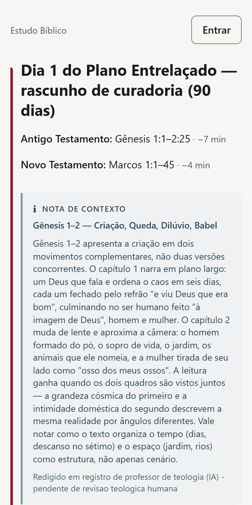
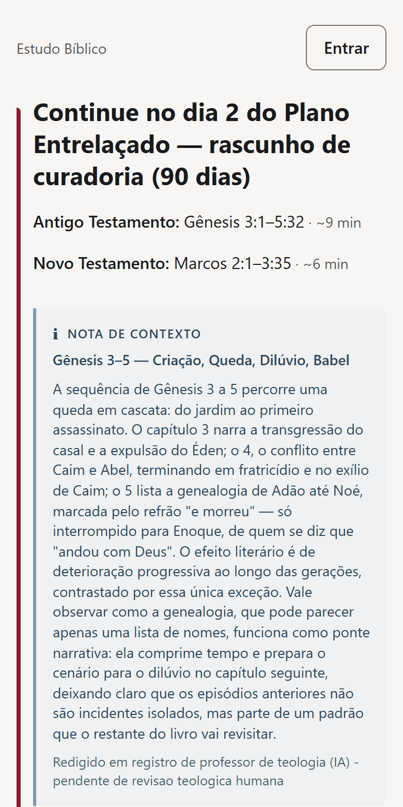
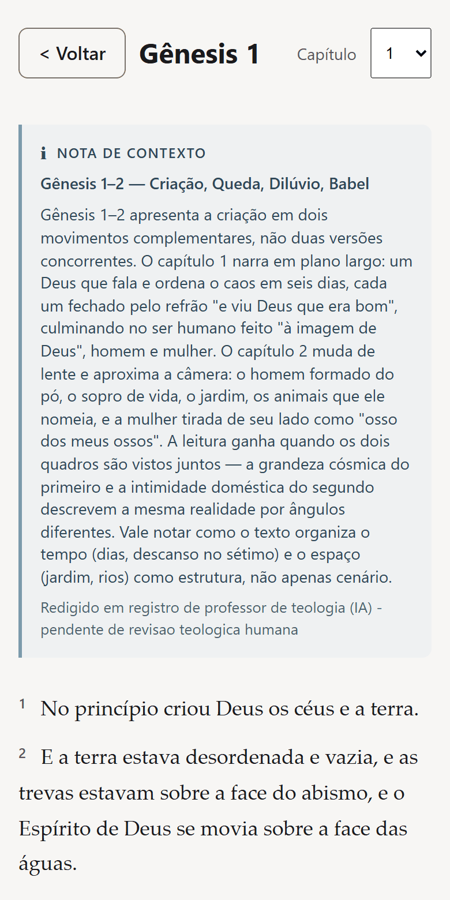
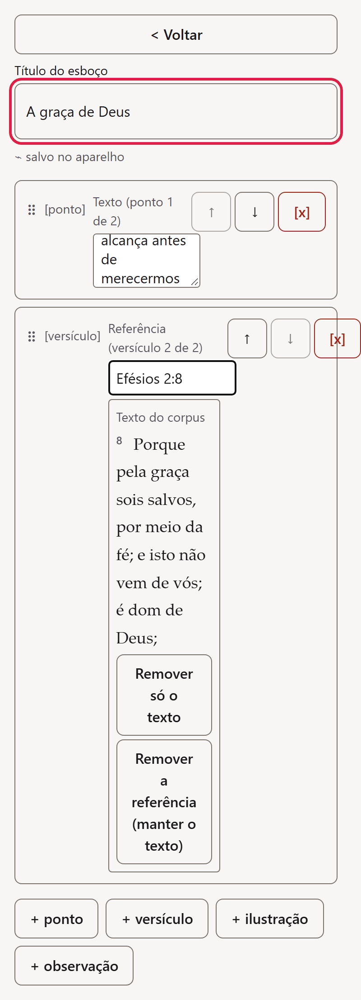
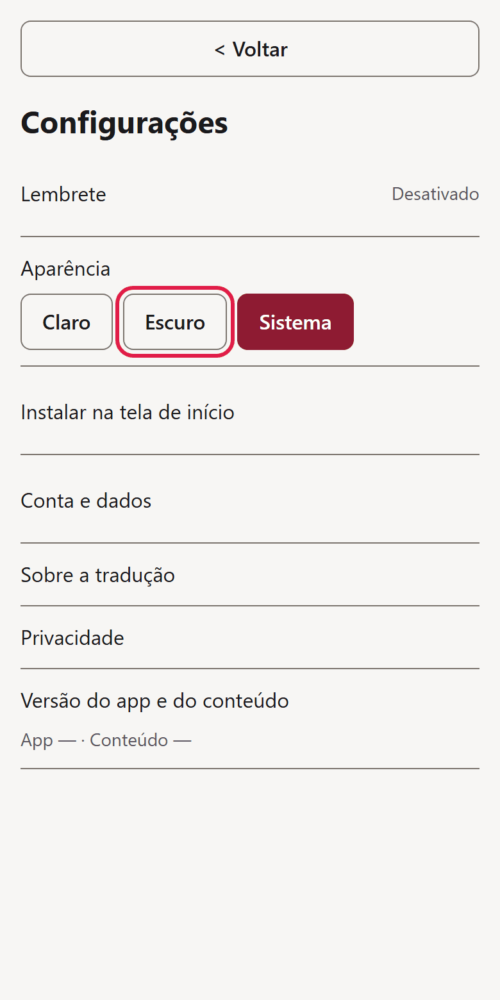

Plano de 90 dias
Todo dia, uma leitura do Antigo e outra do Novo Testamento, com tempo estimado e nota de contexto.
App web (PWA) · Leitura e estudo bíblico
Plano Entrelaçado com Antigo e Novo Testamento no mesmo dia, Bíblia completa para navegar, acompanhamento de progresso e esboços de estudo ou sermão. Funciona no navegador do celular ou do computador.

Por que usar
Todo dia, uma leitura do Antigo e outra do Novo Testamento, com tempo estimado e nota de contexto.
Veja os últimos 30 dias, os dias concluídos de 90, a sequência atual e o recorde. Um lembrete opcional ajuda a manter o hábito (exige instalar como app).
Esboços com blocos de ponto, versículo, ilustração e observação, com opções de apresentar, duplicar, ver versões e excluir. Seus dados ficam no aparelho: exporte para guardar.
Por dentro
O Plano Entrelaçado traz, por dia, uma leitura do Antigo Testamento e outra do Novo Testamento, com o tempo estimado de cada uma e uma nota de contexto. As notas de contexto são redigidas por IA e estão pendentes de revisão teológica humana.

Navegue pela Bíblia inteira por um índice com filtro e leia no leitor por capítulo, com a nota de contexto quando houver.

Monte esboços com blocos de ponto, versículo, ilustração e observação. No bloco de versículo, o texto é buscado pela referência. Reordene com as setas para cima e para baixo; o salvamento é automático.

Escolha a aparência Claro, Escuro ou Sistema, instale o app na tela de início e acesse Conta e dados (com exportação em JSON), Privacidade e Sobre a tradução.

Dúvidas
Não para usar: o Minha Jornada funciona no navegador do celular ou do computador. Instalar como app é necessário para o lembrete opcional e ajuda a preservar seus dados no aparelho.
Seus dados de leitura e seus esboços ficam no aparelho. Recomenda-se exportar: em Configurações, Conta e dados, use Exportar meus dados (arquivo JSON). Se o aparelho ficar dias sem abrir o app, ele pode apagar esses dados; instalar ajuda a evitar isso.
Use as setas para cima e para baixo de cada bloco. Não é preciso arrastar.
Não. O salvamento é automático.
Em Configurações, Aparência: Claro, Escuro ou Sistema.
As notas de contexto são redigidas por IA e estão pendentes de revisão teológica humana.
Abra o Minha Jornada no navegador, sem precisar instalar nada.
Abrir app (abre em nova aba)